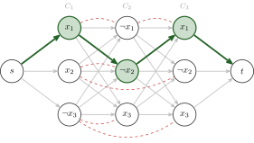
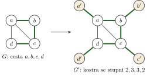
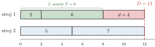
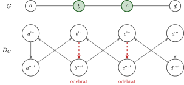
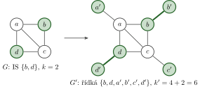
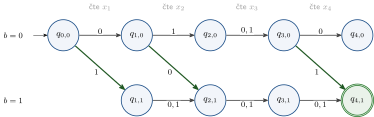
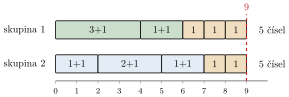
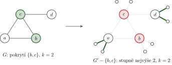
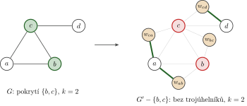

B.4 Typ 4: Důkaz NP-těžkosti redukcí¶
Úloha 4 testu: „Pro daný problém ukažte, že je NP-těžký (úplný) redukcí z vhodného problému.“ (12 bodů). Podle hlavičky ukázkového testu lze na přednášce probrané NP-úplné problémy použít bez důkazu. Postup na papíře je v oddílu A.3.4.
Postup: Než začneš: co budeš potřebovat
Definice.
- \(\href{../ch-np/ch-np-tridy-nedeterministicke-casove-slozitosti.html#def-ntime}{\class{woo-pk-def-ntime}{\NP}}\) (definice 4.7, věta 4.11): \(Q\in\href{../ch-np/ch-np-tridy-nedeterministicke-casove-slozitosti.html#def-ntime}{\class{woo-pk-def-ntime}{\NP}}\), když každá \(\ANO\)-instance má certifikát polynomiální délky, který ověří polynomiální verifikátor, a \(\NE\)-instance žádný přijatý certifikát nemá.
- Polynomiální redukce \(A\mathrel{\href{../ch-redukce/ch-redukce-jak-porovnat-slozitost-dvou-problemu.html#def-redukce}{\class{woo-pk-def-redukce}{\redp}}} B\) (definice 5.1): funkce \(f\) spočitatelná v polynomiálním čase, pro kterou \(x\in A\iff f(x)\in B\) pro každé \(x\). Směr: ze známého NP-úplného \(A\) na nový problém \(B\) – kdyby \(B\) šlo řešit rychle, šlo by i \(A\) (lemma 5.2).
- NP-těžký: \(L\mathrel{\href{../ch-redukce/ch-redukce-jak-porovnat-slozitost-dvou-problemu.html#def-redukce}{\class{woo-pk-def-redukce}{\redp}}} Q\) pro všechna \(L\in\href{../ch-np/ch-np-tridy-nedeterministicke-casove-slozitosti.html#def-ntime}{\class{woo-pk-def-ntime}{\NP}}\); díky tranzitivitě stačí jedna redukce ze známého NP-těžkého problému. NP-úplný = NP-těžký a zároveň v \(\href{../ch-np/ch-np-tridy-nedeterministicke-casove-slozitosti.html#def-ntime}{\class{woo-pk-def-ntime}{\NP}}\) (definice 5.3, důsledek 6.6).
Problémy, ze kterých se redukuje (NP-úplné z přednášky, smíš je použít bez důkazu):
| problém | otázka | úloha |
|---|---|---|
| \(\href{../ch-sat/ch-sat-sat-3-sat.html#red-sat3sat}{\class{woo-pk-pojem-3sat}{\prob{3-SAT}}}\) (oddíl 7.1) | je formule v KNF se třemi literály v každé klauzuli splnitelná? | 4.1, 4.6 |
| \(\href{../ch-sat/ch-sat-nae-3-sat-not-all-equal.html#prob-nae}{\class{woo-pk-prob-nae}{\prob{NAE-3-SAT}}}\) / \(\href{../ch-x3c/ch-x3c-1-in-3-sat.html#prob-1in3}{\class{woo-pk-prob-1in3}{\prob{1-in-3 SAT}}}\) (7.2, 10.1) | ohodnocení s pravdou i nepravdou / s právě jednou pravdou v každé klauzuli? | |
| \(\href{../ch-is/ch-is-nezavisla-mnozina.html#prob-is}{\class{woo-pk-prob-is}{\prob{IS}}}\) / \(\href{../ch-is/ch-is-is-clique.html#prob-cliquer}{\class{woo-pk-prob-cliquer}{\prob{Clique}}}\) (8.1, 4.14) | aspoň \(k\) vrcholů, mezi nimiž není žádná / je každá hrana? | 4.5 |
| \(\href{../ch-is/ch-is-vertex-cover.html#prob-vc}{\class{woo-pk-prob-vc}{\prob{VC}}}\) (8.4) | nejvýše \(k\) vrcholů, které zasáhnou každou hranu? | 4.4, 4.8, 4.9 |
| \(\href{../ch-zoo/ch-zoo-3-coloring.html#prob-3col}{\class{woo-pk-prob-3col}{\prob{3-Coloring}}}\) / \(\href{../ch-is/sec-cv3.html#cv-3-6}{\class{woo-pk-pojem-dominating-set}{\prob{Dominating Set}}}\) (9.1, Cvičení 3.6 (= cvičení 4.3)) | 3 barvy, sousedé různé / nejvýše \(k\) vrcholů, každý jiný má mezi nimi souseda? | |
| hamiltonovská cesta / kružnice (11.1, 11.1.3, 11.1.4) | cesta / kružnice přes každý vrchol právě jednou (i neorientovaně)? | 4.2 |
| \(\href{../ch-cisla/ch-cisla-ciselne-problemy.html#prob-subsetsum}{\class{woo-pk-prob-subsetsum}{\prob{Subset Sum}}}\) / \(\href{../ch-cisla/ch-cisla-ciselne-problemy.html#prob-partition}{\class{woo-pk-prob-partition}{\prob{Partition}}}\) (11.8, 11.9) | binárně zapsaná kladná čísla: podmnožina se součtem \(T\) / dvě skupiny se stejným součtem? | 4.3, 4.7 |
| \(\href{../ch-x3c/ch-x3c-exact-cover.html#prob-x3c}{\class{woo-pk-prob-x3c}{\prob{X3C}}}\) (10.2) | lze z trojic vybrat \(k\) tak, aby pokryly \(3k\) prvků každý právě jednou? |
Typické gadgety (rigidita a gadgety v oddílu 8.2):
- Přivěšený list „spotřebuje“ stupeň nebo povoleného souseda vrcholu (4.2, 4.5; dva listy 4.8). Trojúhelník: nový vrchol \(w_{uv}\) za hranu udělá z hrany trojúhelník (4.9, Cvičení 3.5 (= cvičení 4.2), Cvičení 3.6 (= cvičení 4.3)).
- Rozdělení vrcholu na hranu \(v^{\mathrm{in}}\to v^{\mathrm{out}}\): výběr vrcholu = výběr hrany (4.4, redukce \(\prob{DHP}\redp\prob{UHP}\)). Vrstva za klauzuli s vrcholem za každý výskyt literálu a zákazem opačných literálů (4.1, \(\prob{3-SAT}\redp\prob{IS}\)); automat za klauzuli (4.6).
- Doplněk: grafu (\(\prob{IS}\redp\prob{Clique}\)) nebo množiny (\(\prob{IS}\redp\prob{VC}\)). Přidání čísel: vyrovnávací číslo \(|S-2T|\) (4.3, redukce \(\prob{Subset Sum}\redp\prob{Partition}\)), posun všech čísel o 1 a přidané jedničky (4.7).
- Normalizace (výměnný argument) v (\(\Leftarrow\)): řešení cílové instance, které používá nové prvky, přestav bez zhoršení na „hezké“ (4.4, 4.5, 4.8, 4.9).
Nejčastější chyby (podrobně u postupu A.3.4): opačný směr (\(Q\mathrel{\href{../ch-redukce/ch-redukce-jak-porovnat-slozitost-dvou-problemu.html#def-redukce}{\class{woo-pk-def-redukce}{\redp}}}\href{../ch-cook/ch-cook-cook-levinova-veta.html#prob-sat}{\class{woo-pk-prob-sat}{\prob{SAT}}}\) o těžkosti \(Q\) nic neříká); chybí (\(\Leftarrow\)) nebo normalizace; exponenciální konstrukce nebo konstrukce, která zná řešení; binární čísla vypsaná unárně (a unární \(1^n\) ve 4.6 musí zůstat polynomiální); chybí \(Q\in\href{../ch-np/ch-np-tridy-nedeterministicke-casove-slozitosti.html#def-ntime}{\class{woo-pk-def-ntime}{\NP}}\) nebo triviální případ (pevná \(\NE\)-instance, 4.3).
Doporučené pořadí (od nejlehčí): 4.2 \(\to\) 4.5 \(\to\) 4.8 \(\to\) 4.9 (listy a trojúhelníky) \(\to\) 4.7 \(\to\) 4.3 (čísla) \(\to\) 4.1 \(\to\) 4.4 \(\to\) 4.6 (z 3-SAT a rozdělení vrcholu); nakonec úloha 4 ukázkového testu (jádro grafu).
Za plné body (šablona, kterou mají všechna řešení níže; hlavička redukce viz oddíl A.1.2):
- Hlavička: „Redukce: \(A\mathrel{\href{../ch-redukce/ch-redukce-jak-porovnat-slozitost-dvou-problemu.html#def-redukce}{\class{woo-pk-def-redukce}{\redp}}} Q\), instance \(x\mapsto f(x)\).“
- \(Q\in\href{../ch-np/ch-np-tridy-nedeterministicke-casove-slozitosti.html#def-ntime}{\class{woo-pk-def-ntime}{\NP}}\): co je certifikát, jak je dlouhý, co verifikátor kontroluje a v jakém čase.
- Konstrukce úplně (vrcholy, hrany, čísla, parametr \(k\)), ideálně s obrázkem malého příkladu.
- Polynomialita: velikost \(f(x)\) a čas výpočtu jako funkce velikosti \(x\).
- (\(\Rightarrow\)) z řešení \(x\) sestroj řešení \(f(x)\); (\(\Leftarrow\)) z libovolného řešení \(f(x)\) (po normalizaci) sestroj řešení \(x\).
- Závěr: \(A\) je NP-úplný a \(A\mathrel{\href{../ch-redukce/ch-redukce-jak-porovnat-slozitost-dvou-problemu.html#def-redukce}{\class{woo-pk-def-redukce}{\redp}}} Q\), tedy \(Q\) je NP-těžký; s bodem 2 NP-úplný.
B.4.1 Kde to ve skriptech je¶
- Základy:
- definice 5.1 a 5.3, lemma 5.2 (tranzitivita, směr redukce) v kapitole 5; recept v oddílu 6.3; gadgety a rigidita v oddílu 8.2.
- Z 3-SAT s gadgety:
- \(\prob{3-SAT} \redp \prob{IS}\) (trojúhelník za klauzuli, hrany mezi opačnými literály – nejbližší vzor k typové úloze 4.1), \(\prob{3-SAT} \redp \prob{3-Coloring}\) (gadget proměnné a klauzule), \(\prob{3-SAT} \redp \prob{NAE-3-SAT}\), \(\prob{3-SAT} \redp \prob{MAPF}\), \(\prob{3-SAT} \redp \prob{X3C}\), \(\prob{3-SAT} \redp \prob{DHP}\) (hamiltonovská cesta), \(\prob{3-SAT} \redp \prob{ILP}\); úloha 4 ukázkového testu (jádro grafu).
- Mezi variantami SAT:
- \(\prob{SAT} \redp \prob{3-SAT}\) (rozbití dlouhé klauzule), \(\prob{NAE-3-SAT} \redp \prob{Pozitivní NAE-3-SAT}\) (odstranění negací), \(\prob{3-Coloring} \redp \prob{1-in-3 SAT}\), \(\prob{1-in-3 SAT} \redp \prob{Subset Sum}\) (1-in-3 SAT na čísla po cifrách).
- Výběr podmnožiny v grafu:
- \(\prob{IS} \redp \prob{VC}\) (doplněk množiny), \(\prob{IS} \redp \prob{Clique}\) (doplněk grafu), \(\prob{VC} \redp \prob{Hitting Set}\) (zobecnění), a cvičení 3 a 4: Cvičení 3.2 (Subgraph Isomorphism – specializace, \(H=K_k\)), Cvičení 3.3 (Half-Clique – doplnění grafu na správnou velikost), Cvičení 3.4 (= cvičení 4.1) (Set Cover), Cvičení 3.5 (= cvičení 4.2) (Feedback Vertex Set – hrany nahradit trojúhelníky, lokální náhrada), Cvičení 3.6 (= cvičení 4.3) (Dominating Set – vrchol za hranu). Odebrání vrcholů z \(\href{../ch-is/ch-is-vertex-cover.html#prob-vc}{\class{woo-pk-prob-vc}{\prob{VC}}}\) s výměnným argumentem: typové úlohy 4.8 (dva listy ke každému vrcholu) a 4.9 (trojúhelník za hranu, stejný gadget jako Cvičení 3.5 (= cvičení 4.2)).
- Barvení, řezy:
- \(\prob{3-Coloring} \redp \prob{Rozvrh zkoušek}\), \(\prob{3-Coloring} \redp \prob{Planar 3-Coloring}\) (gadget křížení), \(\prob{NAE-3-SAT} \redp \prob{(vážený) MaxCut}\) a \(\prob{vážený MaxCut} \redp \prob{MaxCut}\) (od vah k jednoduchým grafům), Cvičení 4.4 (MaxCut na MAX-2-SAT), Cvičení 4.5 (NAE-3-SAT na 3-barvení).
- Cesty a kružnice:
- \(\prob{DHP} \redp \prob{UHP}\) (orientovaná na neorientovanou – rozdělení vrcholu na tři), \(\prob{DHP} \redp \prob{HC}\), \(\prob{HC} \redp \prob{TSP}\), \(\prob{(U)HP} \redp \prob{Longest Path}\) (zobecnění s parametrem), \(\prob{Vertex Cover} \redp \prob{Steiner Tree}\).
- Čísla:
- \(\prob{Subset Sum} \redp \prob{Partition}\) (doplňková čísla – vzor pro typovou úlohu 4.3), \(\prob{Subset Sum} \redp \prob{Knapsack}\), \(\prob{3-Partition} \redp \prob{Bin Packing}\) (ze silně NP-úplného 3-Partition); chybné „podezřelé“ redukce a jejich opravy v oddílu 11.5 (\(\prob{Subset Sum} \redp \prob{Weighted Exact Path}\), \(\prob{Knapsack} \redp \prob{Restricted Shortest Path}\), \(\prob{3-Partition} \redp \prob{Balanced Split}\)).
- Přehled:
- graf všech redukcí v příloze D s jednovětou nápovědou ke každé redukci.
- Úlohy navíc:
- krátké redukce k procvičení jsou v oddílech „Úlohy navíc“ kapitol 5 (5.2, 5.4, 5.6 až 5.8, vše z \(\href{../ch-redukce/ch-redukce-np-tezkost-a-np-uplnost.html#prob-unp}{\class{woo-pk-prob-unp}{\prob{UNP}}}\)), 6 (6.1 až 6.7, vše ze \(\href{../ch-cook/ch-cook-cook-levinova-veta.html#prob-sat}{\class{woo-pk-prob-sat}{\prob{SAT}}}\)), 7 (7.1, 7.2, 7.4 až 7.8), 8 (8.1, 8.2 – \(\href{../ch-sat/ch-sat-sat-3-sat.html#red-sat3sat}{\class{woo-pk-pojem-3sat}{\prob{3-SAT}}}\mathrel{\href{../ch-redukce/ch-redukce-jak-porovnat-slozitost-dvou-problemu.html#def-redukce}{\class{woo-pk-def-redukce}{\redp}}}\href{../ch-is/ch-is-is-clique.html#prob-cliquer}{\class{woo-pk-prob-cliquer}{\prob{Clique}}}\) přímo, 8.4 až 8.8), 9 (9.1 až 9.5, 9.7, 9.8), 10 (10.2 až 10.8) a 11 (11.3 až 11.5, 11.7 a 11.8 – rozvrh s časovými okny z \(\href{../ch-cisla/ch-cisla-ciselne-problemy.html#prob-partition}{\class{woo-pk-prob-partition}{\prob{Partition}}}\) a silně z \(\href{../ch-cisla/ch-cisla-ciselne-problemy.html#prob-3partition}{\class{woo-pk-prob-3partition}{\prob{3-Partition}}}\)); jednovětý trik ke každé z nich je v oddílu D.1.1. Ze sbírky: 7.10, 7.11, 8.10, 10.9, 10.10 a 11.10 až 11.16 (HC/HP/UHP, TSP, 0/1 ILP, batoh, Subset Sum a Partition, rozvrh na \(m\) strojů, kostra s omezeným stupněm).
B.4.2 Řešené úlohy: NP-těžkost¶
Typová úloha 4.1 [12 bodů]
Cesta se zakázanými dvojicemi. Je dán orientovaný graf \(G=(V,A)\), vrcholy \(s,t\in V\) a množina zakázaných dvojic \(P\subseteq\binom V2\). Orientovaná cesta (bez opakování vrcholů) je přípustná, pokud z žádné dvojice \(\{u,v\}\in P\) neobsahuje oba vrcholy.
Problém \(\href{#typ-4-1}{\class{woo-pk-pojem-pfp}{\prob{Path with Forbidden Pairs}}}\) (PFP): existuje v \(G\) přípustná orientovaná cesta z \(s\) do \(t\)?
Například v grafu \(s\to u\to t\), \(s\to w\to t\) s \(P=\{\{s,u\}\}\) přípustná cesta existuje (\(s,w,t\)); přidáme-li do \(P\) i \(\{w,t\}\), neexistuje.
Dokažte, že problém PFP je NP-úplný. Nápověda: převádějte z problému 3-SAT.
Řešení
Redukce: \(\href{../ch-sat/ch-sat-sat-3-sat.html#red-sat3sat}{\class{woo-pk-pojem-3sat}{\prob{3-SAT}}} \mathrel{\href{../ch-redukce/ch-redukce-jak-porovnat-slozitost-dvou-problemu.html#def-redukce}{\class{woo-pk-def-redukce}{\redp}}} \href{#typ-4-1}{\class{woo-pk-pojem-pfp}{\prob{PFP}}}\), formule \(\Phi\) \(\mapsto\) \((G_\Phi,\ s,\ t,\ P_\Phi)\).
1. PFP je v \(\href{../ch-np/ch-np-tridy-nedeterministicke-casove-slozitosti.html#def-ntime}{\class{woo-pk-def-ntime}{\NP}}\). Certifikát je posloupnost vrcholů \(v_0=s,v_1,\dots,v_r=t\) (\(r<|V|\)). Ověříme, že se vrcholy neopakují, že \((v_{i-1},v_i)\in A\) pro všechna \(i\) a že pro žádnou dvojici z \(P\) nejsou oba vrcholy na cestě. Vše v čase \(O(|V|^2+|A|+|P|)\).
2. Konstrukce. Nechť \(\Phi=C_1\land\dots\land C_m\), kde \(C_j=(\ell_{j,1}\lor\ell_{j,2}\lor\ell_{j,3})\). (Má-li klauzule méně literálů, má i méně vrcholů; nic dalšího se nemění.)
- Vrcholy: \(s\), \(t\) a pro každý výskyt literálu vrchol \(u_{j,a}\) (\(j=1,\dots,m\), \(a=1,2,3\)), který reprezentuje literál \(\ell_{j,a}\). Vrcholy klauzule \(C_j\) tvoří \(j\)-tou „vrstvu“.
- Hrany: \(s\to u_{1,a}\) pro všechna \(a\); \(u_{j,a}\to u_{j+1,b}\) pro všechna \(j<m\) a všechna \(a,b\); \(u_{m,a}\to t\) pro všechna \(a\).
- Zakázané dvojice: \(\{u_{j,a},u_{j',b}\}\in P_\Phi\), právě když jsou literály \(\ell_{j,a}\) a \(\ell_{j',b}\) opačné (\(x_i\) a \(\lnot x_i\)).

Obrázek: \(\Phi=(x_1\lor x_2\lor\lnot x_3)\land(\lnot x_1\lor\lnot x_2\lor x_3)\land(x_1\lor\lnot x_2\lor x_3)\). Šedé šipky jsou hrany, červené čárkované spojnice zakázané dvojice (opačné literály). Zeleně přípustná cesta pro ohodnocení \(x_1=1\), \(x_2=0\), \(x_3=1\): v každé klauzuli jde přes jeden pravdivý literál.
3. Polynomialita. \(|V|=3m+2\), \(|A|=3+9(m-1)+3=9(m-1)+6\) a \(|P_\Phi|\le\binom{3m}2\). Konstrukce projde všechny dvojice výskytů literálů, tedy čas \(O(m^2)\).
Pozorování. Graf je vrstvený: z \(s\) vedou hrany jen do vrstvy 1, z vrstvy \(j\) jen do vrstvy \(j+1\) a z vrstvy \(m\) jen do \(t\). Každá cesta z \(s\) do \(t\) je proto tvaru \(s,u_{1,a_1},u_{2,a_2},\dots,u_{m,a_m},t\): vybere z každé klauzule právě jeden literál.
4. (\(\Rightarrow\)) Nechť ohodnocení \(\sigma\) splňuje \(\Phi\). V každé klauzuli \(C_j\) zvolíme pravdivý literál \(\ell_{j,a_j}\) a vezmeme cestu \(s,u_{1,a_1},\dots,u_{m,a_m},t\); je to cesta v \(G_\Phi\). Kdyby obsahovala zakázanou dvojici, byly by dva vybrané literály opačné, a přitom oba pravdivé při \(\sigma\) – spor. Cesta je přípustná.
5. (\(\Leftarrow\)) Nechť existuje přípustná cesta z \(s\) do \(t\). Podle pozorování vybírá literály \(\ell_{1,a_1},\dots,\ell_{m,a_m}\), po jednom z každé klauzule, a protože je přípustná, žádné dva z nich nejsou opačné. Položme \(\sigma(x_i)=1\), je-li mezi vybranými \(x_i\), \(\sigma(x_i)=0\), je-li mezi nimi \(\lnot x_i\), a jinak libovolně; to je dobře definované, protože \(x_i\) a \(\lnot x_i\) vybrané současně nejsou. Každý vybraný literál je pravdivý, takže každá klauzule je splněná a \(\Phi\) je splnitelná.
6. Závěr. \(\href{../ch-sat/ch-sat-sat-3-sat.html#red-sat3sat}{\class{woo-pk-pojem-3sat}{\prob{3-SAT}}}\) je NP-úplný a \(\href{../ch-sat/ch-sat-sat-3-sat.html#red-sat3sat}{\class{woo-pk-pojem-3sat}{\prob{3-SAT}}}\mathrel{\href{../ch-redukce/ch-redukce-jak-porovnat-slozitost-dvou-problemu.html#def-redukce}{\class{woo-pk-def-redukce}{\redp}}}\href{#typ-4-1}{\class{woo-pk-pojem-pfp}{\prob{PFP}}}\), tedy PFP je NP-těžký; spolu s bodem 1 je NP-úplný. (Bez zakázaných dvojic je to obyčejná dosažitelnost, řešitelná prohledáním grafu v polynomiálním čase – těžkost přinášejí právě dvojice.)
Typová úloha 4.2 [12 bodů]
Kostra s omezeným stupněm. Problém \(\href{#typ-4-2}{\class{woo-pk-pojem-deg3-spanning-tree}{\prob{Deg-3 Spanning Tree}}}\): je dán souvislý neorientovaný graf \(G\); má \(G\) kostru (podgraf, který je stromem a obsahuje všechny vrcholy), v níž má každý vrchol stupeň nejvýše 3?
Dokažte, že problém je NP-úplný. Nápověda: převádějte z problému Hamiltonovská cesta.
Řešení
Redukce: \(\href{../ch-cisla/ch-cisla-ulohy-navic.html#un-11-3}{\class{woo-pk-pojem-hp}{\prob{Hamiltonovská cesta}}} \mathrel{\href{../ch-redukce/ch-redukce-jak-porovnat-slozitost-dvou-problemu.html#def-redukce}{\class{woo-pk-def-redukce}{\redp}}} \href{#typ-4-2}{\class{woo-pk-pojem-deg3-spanning-tree}{\prob{Deg-3 Spanning Tree}}}\), graf \(G\) \(\mapsto\) graf \(G'\) (ke každému vrcholu přivěsíme nový list).
1. Problém je v \(\href{../ch-np/ch-np-tridy-nedeterministicke-casove-slozitosti.html#def-ntime}{\class{woo-pk-def-ntime}{\NP}}\). Certifikát je množina \(n-1\) hran (kde \(n\) je počet vrcholů). Ověříme, že jsou to hrany \(G\), že tvoří souvislý graf na všech vrcholech (prohledáním; souvislý graf s \(n-1\) hranami je strom) a že žádný vrchol nemá v této množině víc než 3 hrany. Vše polynomiálně.
2. Konstrukce. Pro \(G=(V,E)\) s \(n\) vrcholy a \(m\) hranami sestrojíme \(G'=(V\cup V',\ E\cup E')\), kde \(V'=\{v'\mid v\in V\}\) jsou nové vrcholy a \(E'=\{\{v,v'\}\mid v\in V\}\): ke každému vrcholu \(v\) přivěsíme list \(v'\). (Problém Hamiltonovská cesta smíme brát pro souvislé grafy: nesouvislý graf hamiltonovskou cestu nemá a redukce na něj může vypsat pevnou \(\NE\)-instanci, např. hvězdu \(K_{1,4}\).)

3. Polynomialita. \(G'\) má \(2n\) vrcholů a \(m+n\) hran, sestrojíme ho v lineárním čase.
4. (\(\Rightarrow\)) Nechť \(v_1,v_2,\dots,v_n\) je hamiltonovská cesta v \(G\). Její hrany tvoří kostru grafu \(G\) (souvislá, \(n-1\) hran, bez kružnice). Přidáním všech hran \(\{v,v'\}\) vznikne kostra \(T'\) grafu \(G'\) (každý list \(v'\) se připojí jedinou hranou, kružnice nevznikne). Stupně v \(T'\): vnitřní vrcholy cesty \(2+1=3\), koncové \(1+1=2\), listy \(v'\) mají \(1\). Všechny jsou nejvýše 3.
5. (\(\Leftarrow\)) Nechť \(T'\) je kostra \(G'\) se stupni nejvýše 3. Vrchol \(v'\) má v \(G'\) jediného souseda \(v\), a protože kostra obsahuje všechny vrcholy a je souvislá, musí obsahovat hranu \(\{v,v'\}\); \(v'\) je v ní list. Odebráním všech listů \(v'\) dostaneme strom \(T\) na množině \(V\), který používá jen hrany \(G\) (odebrání listu stromu nechá strom). Každý vrchol \(v\) ztratil přesně hranu \(\{v,v'\}\), takže \(\deg_T(v)=\deg_{T'}(v)-1\le 2\). Strom se všemi stupni nejvýše 2 je cesta, a protože obsahuje všechny vrcholy \(V\), je to hamiltonovská cesta v \(G\). (Pro \(n=1\) je tvrzení triviální.)
6. Závěr. Hamiltonovská cesta je NP-úplná, tedy \(\href{#typ-4-2}{\class{woo-pk-pojem-deg3-spanning-tree}{\prob{Deg-3 Spanning Tree}}}\) je NP-těžký a podle bodu 1 NP-úplný.
Proč gadget. Kdyby horní mez stupně byla součástí vstupu, stačila by identita s mezí 2 (kostra se stupni nejvýše 2 je přímo hamiltonovská cesta). Pro pevnou mez 3 musí redukce každému vrcholu „spotřebovat“ jeden stupeň – to dělá přivěšený list, který v kostře být musí. Pro mez \(d\ge3\) by se přivěsilo \(d-2\) listů.
Typová úloha 4.3 [12 bodů]
Rozvrh na dva stroje. Je dáno \(n\) úloh s délkami \(p_1,\dots,p_n\in\N\) (zapsanými binárně) a termín \(D\in\N\). Lze úlohy rozdělit na dva stejné stroje tak, aby součet délek úloh na každém stroji byl nejvýše \(D\) (oba stroje skončí do termínu \(D\))?
Dokažte, že tento problém je NP-úplný. Nápověda: převádějte z problému Subset Sum.
Řešení
Redukce: \(\href{../ch-cisla/ch-cisla-ciselne-problemy.html#prob-subsetsum}{\class{woo-pk-prob-subsetsum}{\prob{Subset Sum}}} \mathrel{\href{../ch-redukce/ch-redukce-jak-porovnat-slozitost-dvou-problemu.html#def-redukce}{\class{woo-pk-def-redukce}{\redp}}} \href{#typ-4-3}{\class{woo-pk-pojem-rozvrh-dva-stroje}{\prob{Rozvrh na dva stroje}}}\), instance \((a_1,\dots,a_n;\ T)\) \(\mapsto\) \((a_1,\dots,a_n,\ d;\ D)\) s vyrovnávací úlohou \(d=|S-2T|\) a termínem \(D=\max(T,S-T)\), kde \(S=\sum_i a_i\).
1. Problém je v \(\href{../ch-np/ch-np-tridy-nedeterministicke-casove-slozitosti.html#def-ntime}{\class{woo-pk-def-ntime}{\NP}}\). Certifikát je rozdělení úloh na stroje (\(n\) bitů); sečteme délky na obou strojích a porovnáme s \(D\), polynomiálně v délce binárního zápisu.
2. Konstrukce. Je dána instance \(\href{../ch-cisla/ch-cisla-ciselne-problemy.html#prob-subsetsum}{\class{woo-pk-prob-subsetsum}{\prob{Subset Sum}}}\) \((a_1,\dots,a_n;\ T)\), \(S=\sum_i a_i\).
- Je-li \(T>S\), odpověď je \(\NE\); vypíšeme pevnou \(\NE\)-instanci: jedna úloha délky 1 a \(D=0\).
- Je-li \(2T\le S\): úlohy \(a_1,\dots,a_n\) a navíc úloha \(d=S-2T\), termín \(D=S-T\).
- Je-li \(2T>S\): úlohy \(a_1,\dots,a_n\) a navíc úloha \(d=2T-S\), termín \(D=T\).
(Je-li \(d=0\), úlohu \(d\) nepřidáváme.) V obou hlavních případech je celková délka všech úloh \(S+d=2D\), takže rozvrh do termínu \(D\) existuje, právě když jde úlohy rozdělit na dvě části s přesně stejným součtem \(D\). Je to stejná myšlenka „doplňkových čísel“ jako v redukci \(\prob{Subset Sum} \redp \prob{Partition}\).
3. Polynomialita. Výstup má \(n+1\) čísel, každé nejvýše \(2\max(S,T)\), tedy s binárním zápisem o \(O(\log n)\) bitů delším než vstupní čísla; spočítáme ho sčítáním a odčítáním v polynomiálním čase.
4. (\(\Rightarrow\)) Nechť \(I\subseteq\{1,\dots,n\}\) má \(\sum_{i\in I}a_i=T\).
- \(2T\le S\): na stroj 1 dáme úlohy z \(I\) a úlohu \(d\): \(T+(S-2T)=S-T=D\); na stroj 2 zbytek: \(S-T=D\).
- \(2T>S\): na stroj 1 dáme úlohy z \(I\): \(T=D\); na stroj 2 zbytek a úlohu \(d\): \((S-T)+(2T-S)=T=D\).

Příklad (nad rámec přednášky): \(\href{../ch-cisla/ch-cisla-ciselne-problemy.html#prob-subsetsum}{\class{woo-pk-prob-subsetsum}{\prob{Subset Sum}}}\) s čísly \(2,5,6,7\) a \(T=8\), tedy \(S=20\), \(2T\le S\), \(d=S-2T=4\) a \(D=S-T=12\). Podmnožina \(I=\{2,6\}\) dá rozvrh z bodu 4, oba stroje skončí přesně v čase \(D\). Všimni si: celková délka \(S+d=24=2D\) nenechá žádnou volnou chvíli, takže každý přípustný rozvrh má na stroji s úlohou \(d\) čísla se součtem \(D-d=T\) – to je bod 5.
5. (\(\Leftarrow\)) Nechť existuje rozvrh, kde oba stroje skončí do \(D\). Celková délka je \(2D\), takže každý stroj má přesně \(D\). Jsme v jednom z hlavních případů (\(T\le S\), jinak by výstupem byla \(\NE\)-instance, která rozvrh nemá: úloha délky 1 se do \(D=0\) nevejde).
- \(2T\le S\): na stroji s úlohou \(d\) (pokud \(d=0\), na libovolném) mají úlohy \(a_i\) součet \(D-d=(S-T)-(S-2T)=T\).
- \(2T>S\): na stroji bez úlohy \(d\) mají úlohy \(a_i\) součet \(D=T\).
V obou případech jsme našli podmnožinu čísel \(a_i\) se součtem \(T\).
6. Závěr. \(\href{../ch-cisla/ch-cisla-ciselne-problemy.html#prob-subsetsum}{\class{woo-pk-prob-subsetsum}{\prob{Subset Sum}}}\) je NP-úplný, tedy rozvrh na dva stroje je NP-těžký a podle bodu 1 NP-úplný.
Poznámka. Problém je jen slabě NP-úplný: dynamickým programováním přes dosažitelné součty (jako ve větě 11.12) ho vyřešíme v čase \(O(n\cdot D)\), tedy pseudopolynomiálně. Proto je důležité, že délky jsou zapsané binárně; redukce čísla nezvětšuje víc než konstantně krát.
Typová úloha 4.4 [12 bodů]
Zpětnovazební množina hran. Je dán orientovaný graf \(G=(V,A)\) a číslo \(k\). Množina hran \(F\subseteq A\) je zpětnovazební, pokud graf \((V,A\setminus F)\) neobsahuje žádný orientovaný cyklus.
Problém \(\href{#typ-4-4}{\class{woo-pk-pojem-fas}{\prob{Feedback Arc Set}}}\) (FAS): existuje zpětnovazební množina hran \(F\) s \(|F|\le k\)?
Například orientovaný cyklus \(u\to v\to w\to u\) má zpětnovazební množinu velikosti 1 (libovolnou jeho hranu), kdežto graf s hranami \(u\to v\), \(v\to u\), \(v\to w\), \(w\to v\) potřebuje dvě hrany.
Dokažte, že problém FAS je NP-úplný. Nápověda: převádějte z problému Vrcholové pokrytí.
Řešení
Redukce: \(\href{../ch-is/ch-is-vertex-cover.html#prob-vc}{\class{woo-pk-prob-vc}{\prob{Vertex Cover}}} \mathrel{\href{../ch-redukce/ch-redukce-jak-porovnat-slozitost-dvou-problemu.html#def-redukce}{\class{woo-pk-def-redukce}{\redp}}} \href{#typ-4-4}{\class{woo-pk-pojem-fas}{\prob{FAS}}}\), instance \((G,c)\) \(\mapsto\) \((D_G,\ k=c)\): každý vrchol \(v\) rozdělíme na hranu \(v^{\mathrm{in}}\to v^{\mathrm{out}}\) a každou hranu \(\{u,v\}\) nahradíme dvojicí hran \(u^{\mathrm{out}}\to v^{\mathrm{in}}\), \(v^{\mathrm{out}}\to u^{\mathrm{in}}\).
1. FAS je v \(\href{../ch-np/ch-np-tridy-nedeterministicke-casove-slozitosti.html#def-ntime}{\class{woo-pk-def-ntime}{\NP}}\). Certifikát je množina hran \(F\) (nejvýše \(|A|\) hran). Ověříme, že \(F\subseteq A\) a \(|F|\le k\), a že graf \((V,A\setminus F)\) je acyklický: topologickým uspořádáním (opakovaně odebíráme vrchol bez vstupních hran) nebo prohledáním do hloubky, které hledá zpětnou hranu. Vše v čase \(O(|V|+|A|)\).
2. Konstrukce. Je dán neorientovaný graf \(G=(V,E)\) s \(n\) vrcholy a \(m\) hranami a číslo \(c\). Orientovaný graf \(D_G\) má:
- Vrcholy: pro každé \(v\in V\) dva vrcholy \(v^{\mathrm{in}}\) a \(v^{\mathrm{out}}\).
- Vnitřní hrany: pro každé \(v\in V\) hranu \(v^{\mathrm{in}}\to v^{\mathrm{out}}\). Ta bude zastupovat vrchol \(v\): odebrat ji znamená „vzít \(v\) do pokrytí“.
- Spojovací hrany: pro každou hranu \(\{u,v\}\in E\) dvě hrany \(u^{\mathrm{out}}\to v^{\mathrm{in}}\) a \(v^{\mathrm{out}}\to u^{\mathrm{in}}\).
Parametr zůstává: \(k=c\).

Obrázek: cesta \(a,b,c,d\) a graf \(D_G\) pod ní (vrchol \(v\) nahoře, jeho dvojice \(v^{\mathrm{in}}\), \(v^{\mathrm{out}}\) pod ním). Každá hrana \(G\) dává v \(D_G\) cyklus délky 4, např. \(a^{\mathrm{in}}\to a^{\mathrm{out}}\to b^{\mathrm{in}}\to b^{\mathrm{out}}\to a^{\mathrm{in}}\). Vrcholové pokrytí \(\{b,c\}\) (zeleně) určuje zpětnovazební množinu: obě červené čárkované vnitřní hrany. Po jejich odebrání žádný cyklus nezbude.
3. Polynomialita. \(D_G\) má \(2n\) vrcholů a \(n+2m\) hran; sestrojíme ho jedním průchodem vrcholů a hran, v čase \(O(n+m)\).
Pozorování (tvar cyklů). Z vrcholu \(v^{\mathrm{in}}\) vede jediná hrana, a to vnitřní hrana do \(v^{\mathrm{out}}\); z \(v^{\mathrm{out}}\) vedou jen spojovací hrany do \(u^{\mathrm{in}}\) pro sousedy \(u\) vrcholu \(v\). Každý orientovaný cyklus v \(D_G\) proto střídá vnitřní a spojovací hrany a má tvar \(v_1^{\mathrm{in}}\to v_1^{\mathrm{out}}\to v_2^{\mathrm{in}}\to v_2^{\mathrm{out}}\to\dots\to v_r^{\mathrm{out}}\to v_1^{\mathrm{in}}\), kde po sobě jdoucí vrcholy \(v_i,v_{i+1}\) (i \(v_r,v_1\)) jsou v \(G\) sousední. Hrana \(v^{\mathrm{out}}\to v^{\mathrm{in}}\) neexistuje (graf nemá smyčky), takže \(r\ge 2\): každý cyklus obsahuje vnitřní hrany dvou sousedních vrcholů \(v_1,v_2\). Naopak každá hrana \(\{u,v\}\in E\) dává cyklus \(u^{\mathrm{in}}\to u^{\mathrm{out}}\to v^{\mathrm{in}}\to v^{\mathrm{out}}\to u^{\mathrm{in}}\).
4. (\(\Rightarrow\)) Nechť \(C\) je vrcholové pokrytí \(G\), \(|C|\le c\). Položme \(F=\{v^{\mathrm{in}}\to v^{\mathrm{out}}\mid v\in C\}\), tedy \(|F|=|C|\le k\). Kdyby graf \(D_G\) bez hran \(F\) obsahoval cyklus, obsahoval by podle pozorování vnitřní hrany dvou sousedních vrcholů \(v_1,v_2\). Hranu \(\{v_1,v_2\}\) ale pokrývá \(C\), takže \(v_1\in C\) nebo \(v_2\in C\) a příslušná vnitřní hrana je v \(F\) – spor. \(F\) je tedy zpětnovazební.
5. (\(\Leftarrow\)) Nechť \(F\) je zpětnovazební množina v \(D_G\), \(|F|\le k\). Nejdřív ji normalizujeme: každou spojovací hranu \(u^{\mathrm{out}}\to v^{\mathrm{in}}\) z \(F\) nahradíme vnitřní hranou \(v^{\mathrm{in}}\to v^{\mathrm{out}}\). Vzniklá množina \(F'\) je opět zpětnovazební: cyklus, který procházel hranou \(u^{\mathrm{out}}\to v^{\mathrm{in}}\), pokračuje z \(v^{\mathrm{in}}\) jedinou možnou hranou \(v^{\mathrm{in}}\to v^{\mathrm{out}}\), a ta je v \(F'\); cyklus, který zasahovala vnitřní hrana z \(F\), zasahuje i \(F'\). Přitom \(|F'|\le|F|\) (náhrady mohou splynout). \(F'\) obsahuje jen vnitřní hrany; položme \(C=\{v\mid v^{\mathrm{in}}\to v^{\mathrm{out}}\in F'\}\), \(|C|=|F'|\le k=c\). Pro každou hranu \(\{u,v\}\in E\) musí \(F'\) zasáhnout cyklus \(u^{\mathrm{in}}\to u^{\mathrm{out}}\to v^{\mathrm{in}}\to v^{\mathrm{out}}\to u^{\mathrm{in}}\); jeho jediné vnitřní hrany jsou hrany vrcholů \(u\) a \(v\), takže \(u\in C\) nebo \(v\in C\). \(C\) je vrcholové pokrytí velikosti nejvýše \(c\).
6. Závěr. \(\href{../ch-is/ch-is-vertex-cover.html#prob-vc}{\class{woo-pk-prob-vc}{\prob{Vertex Cover}}}\) je NP-úplný a \(\href{../ch-is/ch-is-vertex-cover.html#prob-vc}{\class{woo-pk-prob-vc}{\prob{Vertex Cover}}}\mathrel{\href{../ch-redukce/ch-redukce-jak-porovnat-slozitost-dvou-problemu.html#def-redukce}{\class{woo-pk-def-redukce}{\redp}}}\href{#typ-4-4}{\class{woo-pk-pojem-fas}{\prob{FAS}}}\), tedy FAS je NP-těžký; spolu s bodem 1 je NP-úplný.
Proč gadget. Kdybychom každou hranu \(\{u,v\}\) jen zorientovali oběma směry (\(u\to v\), \(v\to u\)), musela by zpětnovazební množina rozbít každý 2-cyklus zvlášť a odpověď by byla vždy přesně \(m\) (stačí nechat hrany ve směru libovolného pořadí vrcholů) – žádná informace o pokrytí. Rozdělení vrcholu na vnitřní hranu převádí „výběr vrcholu“ na „výběr hrany“; stejný trik používá redukce \(\prob{DHP} \redp \prob{UHP}\).
Typová úloha 4.5 [12 bodů]
Řídká množina. Je dán neorientovaný graf \(G=(V,E)\) a číslo \(k\). Množina \(S\subseteq V\) je řídká, pokud každý vrchol z \(S\) má v \(S\) nejvýše jednoho souseda (podgraf indukovaný množinou \(S\) má všechny stupně nejvýše 1, je to párování a izolované vrcholy).
Problém \(\href{#typ-4-5}{\class{woo-pk-pojem-ridka-mnozina}{\prob{Řídká množina}}}\) (anglicky dissociation set): existuje v \(G\) řídká množina \(S\) s \(|S|\ge k\)?
Například cesta \(a,b,c\) má řídkou množinu \(\{a,b\}\) velikosti 2, ale žádnou velikosti 3 (vrchol \(b\) by měl dva sousedy).
Dokažte, že problém \(\href{#typ-4-5}{\class{woo-pk-pojem-ridka-mnozina}{\prob{Řídká množina}}}\) je NP-úplný. Nápověda: převádějte z problému Nezávislá množina.
Řešení
Redukce: \(\href{../ch-is/ch-is-nezavisla-mnozina.html#prob-is}{\class{woo-pk-prob-is}{\prob{IS}}} \mathrel{\href{../ch-redukce/ch-redukce-jak-porovnat-slozitost-dvou-problemu.html#def-redukce}{\class{woo-pk-def-redukce}{\redp}}} \href{#typ-4-5}{\class{woo-pk-pojem-ridka-mnozina}{\prob{Řídká množina}}}\), instance \((G,k)\) \(\mapsto\) \((G',\ k'=n+k)\), kde \(G'\) vznikne z \(G\) přivěšením nového listu \(v'\) ke každému vrcholu \(v\).
1. Problém je v \(\href{../ch-np/ch-np-tridy-nedeterministicke-casove-slozitosti.html#def-ntime}{\class{woo-pk-def-ntime}{\NP}}\). Certifikát je množina \(S\). Ověříme \(|S|\ge k\) a pro každý vrchol \(v\in S\) spočítáme sousedy v \(S\) (průchod seznamem sousedů s polem příslušnosti do \(S\)); jsou-li všechny počty nejvýše 1, přijmeme. Čas \(O(|V|+|E|)\).
2. Konstrukce. Pro \(G=(V,E)\) s \(n\) vrcholy a \(m\) hranami sestrojíme \(G'=(V\cup V',\ E\cup E')\), kde \(V'=\{v'\mid v\in V\}\) jsou nové vrcholy a \(E'=\{\{v,v'\}\mid v\in V\}\), a položíme \(k'=n+k\). (Je-li \(k>n\), je \(k'>2n\) a obě instance jsou \(\NE\); nic zvláštního řešit nemusíme.)

Obrázek: zeleně nezávislá množina \(\{b,d\}\) v \(G\) a z ní řídká množina v \(G'\) (všechny listy a \(b\), \(d\)). Zeleně vytažené hrany jsou jediné hrany uvnitř řídké množiny: každý vybraný vrchol \(G\) má za jediného souseda svůj list.
3. Polynomialita. \(G'\) má \(2n\) vrcholů a \(m+n\) hran, sestrojíme ho v čase \(O(n+m)\); číslo \(k'=n+k\) spočítáme sčítáním.
4. (\(\Rightarrow\)) Nechť \(S\) je nezávislá množina v \(G\), \(|S|\ge k\). Položme \(S'=S\cup V'\), tedy \(|S'|=|S|+n\ge n+k\). List \(v'\) má v \(G'\) jediného souseda \(v\), takže má v \(S'\) nejvýše jednoho souseda. Vrchol \(v\in S\) má v \(G'\) sousedy: své sousedy v \(G\) (ti nejsou v \(S\), protože \(S\) je nezávislá, a nejsou v \(V'\)) a list \(v'\). V \(S'\) má tedy právě jednoho souseda. \(S'\) je řídká.
5. (\(\Leftarrow\)) Nechť \(S'\) je řídká množina v \(G'\), \(|S'|\ge n+k\). Nemusí obsahovat všechny listy (např. \(\{a,b,c',d'\}\) v obrázku je řídká), proto ji nejdřív normalizujeme. Postupně pro každý vrchol \(v\in V\) s \(v'\notin S'\):
- je-li \(v\in S'\), nahradíme \(v\) listem \(v'\);
- jinak list \(v'\) přidáme.
Odebrání vrcholu žádný počet sousedů nezvýší. Přidaný list \(v'\) má jediného souseda \(v\), který v množině v tu chvíli není (a už do ní nepřibude), takže \(v'\) má v množině 0 sousedů a nikomu jinému počet sousedů nestoupne. Množina tedy zůstane řídká a její velikost neklesne. Výsledná řídká množina \(S''\) obsahuje všechny listy a \(|S''|\ge|S'|\ge n+k\). Položme \(S=S''\cap V\); pak \(|S|=|S''|-n\ge k\). Každý \(v\in S\) má v \(S''\) souseda \(v'\), a protože smí mít jen jednoho, žádný jeho soused z \(G\) v \(S''\) není. Tedy \(S\) je nezávislá množina v \(G\) velikosti alespoň \(k\).
6. Závěr. \(\href{../ch-is/ch-is-nezavisla-mnozina.html#prob-is}{\class{woo-pk-prob-is}{\prob{IS}}}\) je NP-úplný a \(\href{../ch-is/ch-is-nezavisla-mnozina.html#prob-is}{\class{woo-pk-prob-is}{\prob{IS}}}\mathrel{\href{../ch-redukce/ch-redukce-jak-porovnat-slozitost-dvou-problemu.html#def-redukce}{\class{woo-pk-def-redukce}{\redp}}}\href{#typ-4-5}{\class{woo-pk-pojem-ridka-mnozina}{\prob{Řídká množina}}}\), tedy \(\href{#typ-4-5}{\class{woo-pk-pojem-ridka-mnozina}{\prob{Řídká množina}}}\) je NP-těžký; spolu s bodem 1 NP-úplný.
Proč gadget. Identita \((G,k)\mapsto(G,k)\) nefunguje: jediná hrana \(\{u,v\}\) má nezávislou množinu velikosti 1, ale řídkou velikosti 2. Přivěšený list „spotřebuje“ jediného povoleného souseda každého vybraného vrcholu \(G\), takže vybrané vrcholy \(G\) už spolu sousedit nesmějí. Je to stejný trik jako v typové úloze 4.2, kde list spotřebuje jeden stupeň v kostře.
Typová úloha 4.6 [12 bodů]
Společné slovo automatů. Je dáno \(m\) deterministických konečných automatů \(A_1,\dots,A_m\) nad abecedou \(\{0,1\}\) (každý zadaný množinou stavů, tabulkou přechodové funkce, počátečním stavem a množinou přijímacích stavů) a číslo \(n\) zapsané unárně, tedy jako slovo \(1^n\).
Problém \(\href{#typ-4-6}{\class{woo-pk-pojem-spolecne-slovo}{\prob{Společné slovo}}}\): existuje slovo \(w\in\{0,1\}^n\) (délky přesně \(n\)), které přijímají všechny automaty \(A_1,\dots,A_m\)?
Například automat „slovo končí na 1“ a automat „slovo má sudý počet jedniček“ mají pro \(n=2\) společné slovo \(11\), pro \(n=1\) žádné.
Dokažte, že problém \(\href{#typ-4-6}{\class{woo-pk-pojem-spolecne-slovo}{\prob{Společné slovo}}}\) je NP-úplný, a vysvětlete, kde se použije, že \(n\) je zadané unárně. Nápověda: převádějte z problému 3-SAT; slovo délky \(n\) čtěte jako ohodnocení \(n\) proměnných a každé klauzuli přiřaďte jeden automat.
Řešení
Redukce: \(\href{../ch-sat/ch-sat-sat-3-sat.html#red-sat3sat}{\class{woo-pk-pojem-3sat}{\prob{3-SAT}}} \mathrel{\href{../ch-redukce/ch-redukce-jak-porovnat-slozitost-dvou-problemu.html#def-redukce}{\class{woo-pk-def-redukce}{\redp}}} \href{#typ-4-6}{\class{woo-pk-pojem-spolecne-slovo}{\prob{Společné slovo}}}\), formule \(\Phi\) (\(n\) proměnných, \(m\) klauzulí) \(\mapsto\) \((A_1,\dots,A_m;\ 1^n)\), kde automat \(A_j\) přijme slovo \(w\) délky \(n\), právě když ohodnocení \(x_i=w_i\) splňuje klauzuli \(C_j\).
1. Problém je v \(\href{../ch-np/ch-np-tridy-nedeterministicke-casove-slozitosti.html#def-ntime}{\class{woo-pk-def-ntime}{\NP}}\). Certifikát je slovo \(w\in\{0,1\}^n\). Ověřovatel zkontroluje délku a pustí každý automat \(A_j\) na \(w\): \(n\) kroků, v každém jedno vyhledání v tabulce přechodů. Celkem \(m\cdot n\) kroků, tedy polynomiálně vzhledem k délce vstupu. Tady je potřeba unární zápis: vstup obsahuje \(1^n\), takže \(n\) je nejvýše délka vstupu a certifikát je polynomiálně dlouhý. Kdyby bylo \(n\) zapsané binárně, mohlo by být exponenciálně velké vzhledem k délce vstupu a slovo \(w\) by jako certifikát nestačilo – tento důkaz příslušnosti do \(\href{../ch-np/ch-np-tridy-nedeterministicke-casove-slozitosti.html#def-ntime}{\class{woo-pk-def-ntime}{\NP}}\) by neprošel.
2. Konstrukce. Nechť \(\Phi=C_1\land\dots\land C_m\) nad proměnnými \(x_1,\dots,x_n\). (Proměnné, které se ve \(\Phi\) nevyskytují, předem vynecháme a zbylé přečíslujeme, takže \(n\le 3m\); jinak by mohl být index proměnné zapsaný binárně krátký a slovo \(1^n\) exponenciálně dlouhé.) Slovo \(w=w_1\dots w_n\in\{0,1\}^n\) chápeme jako ohodnocení \(\sigma_w(x_i)=w_i\). Pro klauzuli \(C_j\) sestrojíme automat \(A_j=(Q_j,\{0,1\},\delta_j,q_{0,0},F_j)\):
- Stavy \(q_{i,b}\) pro \(i=0,\dots,n\) a \(b\in\{0,1\}\) a past \(r\), celkem \(2n+3\) stavů. Význam: „přečetl jsem \(i\) symbolů a \(b=1\), právě když už je některý literál \(C_j\) s proměnnou mezi \(x_1,\dots,x_i\) pravdivý“.
- Přechody pro \(i=1,\dots,n\), \(b\in\{0,1\}\) a \(a\in\{0,1\}\): \(\delta_j(q_{i-1,b},a)=q_{i,b'}\), kde \(b'=1\), pokud \(b=1\), nebo \(x_i\in C_j\) a \(a=1\), nebo \(\lnot x_i\in C_j\) a \(a=0\); jinak \(b'=0\).
- Dále \(\delta_j(q_{n,b},a)=r\) a \(\delta_j(r,a)=r\) (delší slova skončí v pasti).
- Přijímací stavy \(F_j=\{q_{n,1}\}\).
Výstupem redukce jsou automaty \(A_1,\dots,A_m\) a slovo \(1^n\).

Automat pro klauzuli \(C=(x_1\lor\lnot x_2\lor x_4)\) a \(n=4\). Zeleně přechody, kterými se klauzule splní (proměnná \(x_3\) v \(C\) není, proto oba její přechody vedou ve stejném řádku). Nedosažitelný stav \(q_{0,1}\) a past \(r\), do které vedou všechny přechody ze stavů \(q_{4,b}\), nejsou nakreslené. Ze 16 slov délky 4 automat odmítne právě \(0100\) a \(0110\) – to jsou ohodnocení, při nichž je \(C\) nepravdivá.
Invariant. Pro \(i\le n\) je \(A_j\) po přečtení \(w_1\dots w_i\) ve stavu \(q_{i,b}\), kde \(b=1\), právě když \(C_j\) obsahuje literál s proměnnou z \(x_1,\dots,x_i\), který je při \(\sigma_w\) pravdivý. Indukcí podle \(i\): pro \(i=0\) je automat v \(q_{0,0}\) a žádný takový literál není; krok \(i-1\to i\) přesně odpovídá definici \(b'\) (přibude literál \(x_i\) nebo \(\lnot x_i\), je-li v \(C_j\) a pravdivý při \(w_i\)). Pro \(i=n\) dostáváme: \(A_j\) přijme slovo \(w\) délky \(n\), právě když \(\sigma_w\) splňuje \(C_j\).
3. Polynomialita. Každý automat má \(2n+3\) stavů a \(2(2n+3)\) přechodů, všech \(m\) automatů tedy \(O(mn)\) přechodů; slovo \(1^n\) má délku \(n\le 3m\). Konstrukce projde pro každou klauzuli všechny proměnné, čas \(O(mn)\), polynomiální ve velikosti formule.
4. (\(\Rightarrow\)) Nechť ohodnocení \(\sigma\) splňuje \(\Phi\). Položme \(w=\sigma(x_1)\dots\sigma(x_n)\), slovo délky \(n\) s \(\sigma_w=\sigma\). Ohodnocení splňuje každou klauzuli \(C_j\), takže podle invariantu každý automat \(A_j\) slovo \(w\) přijme.
5. (\(\Leftarrow\)) Nechť slovo \(w\) délky \(n\) přijímají všechny automaty. Podle invariantu ohodnocení \(\sigma_w\) splňuje každou klauzuli \(C_j\), tedy celou formuli \(\Phi\), a ta je splnitelná.
6. Závěr. \(\href{../ch-sat/ch-sat-sat-3-sat.html#red-sat3sat}{\class{woo-pk-pojem-3sat}{\prob{3-SAT}}}\) je NP-úplný a \(\href{../ch-sat/ch-sat-sat-3-sat.html#red-sat3sat}{\class{woo-pk-pojem-3sat}{\prob{3-SAT}}}\mathrel{\href{../ch-redukce/ch-redukce-jak-porovnat-slozitost-dvou-problemu.html#def-redukce}{\class{woo-pk-def-redukce}{\redp}}}\href{#typ-4-6}{\class{woo-pk-pojem-spolecne-slovo}{\prob{Společné slovo}}}\), tedy \(\href{#typ-4-6}{\class{woo-pk-pojem-spolecne-slovo}{\prob{Společné slovo}}}\) je NP-těžký; s bodem 1 NP-úplný. (Konstrukce nikde nevyužila, že klauzule mají tři literály, a funguje i pro klauzule s opakovanou proměnnou.)
Proč víc automatů. Jediný automat (\(m=1\)) problém neztíží: slovo délky \(n\), které přijímá, najdeme dynamickým programováním přes dvojice (stav, počet přečtených symbolů) v polynomiálním čase. Těžkost vzniká až z požadavku, aby slovo přijaly všechny automaty zároveň – každý hlídá jednu klauzuli.
Typová úloha 4.7 [12 bodů]
Vyvážené rozdělení. Je dáno \(2N\) kladných celých čísel \(b_1,\dots,b_{2N}\) (zapsaných binárně).
Problém \(\href{#typ-4-7}{\class{woo-pk-pojem-vyvazene-rozdeleni}{\prob{Vyvážené rozdělení}}}\): lze čísla rozdělit na dvě skupiny po \(N\) číslech se stejným součtem?
Například čísla \(1,2,3,4\) lze rozdělit na \(\{1,4\}\) a \(\{2,3\}\). Čísla \(1,1,1,3\) vyváženě rozdělit nelze: součet 3 má jen skupina \(\{3\}\) a skupina \(\{1,1,1\}\), a ty mají různý počet prvků.
Dokažte, že problém \(\href{#typ-4-7}{\class{woo-pk-pojem-vyvazene-rozdeleni}{\prob{Vyvážené rozdělení}}}\) je NP-úplný. Nápověda: převádějte z problému Partition.
Řešení
Redukce: \(\href{../ch-cisla/ch-cisla-ciselne-problemy.html#prob-partition}{\class{woo-pk-prob-partition}{\prob{Partition}}} \mathrel{\href{../ch-redukce/ch-redukce-jak-porovnat-slozitost-dvou-problemu.html#def-redukce}{\class{woo-pk-def-redukce}{\redp}}} \href{#typ-4-7}{\class{woo-pk-pojem-vyvazene-rozdeleni}{\prob{Vyvážené rozdělení}}}\), instance \((a_1,\dots,a_n)\) \(\mapsto\) \((a_1+1,\dots,a_n+1,\ 1,\dots,1)\) s \(n\) jedničkami, tedy \(2N=2n\) čísel.
1. Problém je v \(\href{../ch-np/ch-np-tridy-nedeterministicke-casove-slozitosti.html#def-ntime}{\class{woo-pk-def-ntime}{\NP}}\). Certifikát je množina \(N\) indexů (první skupina). Ověříme počet a porovnáme součty obou skupin; sčítání binárních čísel je polynomiální v délce vstupu.
2. Konstrukce. Je dána instance \(\href{../ch-cisla/ch-cisla-ciselne-problemy.html#prob-partition}{\class{woo-pk-prob-partition}{\prob{Partition}}}\), kladná čísla \(a_1,\dots,a_n\) se součtem \(S\). Myšlenka: přidáme \(n\) nul. Nuly nemění součty, ale dovolí dorovnat počty: skupinu s \(j\) čísly doplníme \(n-j\) nulami, druhou skupinu s \(n-j\) čísly zbylými \(j\) nulami. Zadání ale chce kladná čísla, proto všech \(2n\) čísel posuneme o 1: \(b_i=a_i+1\) pro \(i=1,\dots,n\) a \(b_{n+i}=1\) (posunutá nula) pro \(i=1,\dots,n\); \(N=n\). Posun nezmění, která rozdělení mají stejné součty: obě skupiny mají přesně \(n\) čísel, takže se součet každé zvětší přesně o \(n\).

Příklad: \(\href{../ch-cisla/ch-cisla-ciselne-problemy.html#prob-partition}{\class{woo-pk-prob-partition}{\prob{Partition}}}\) s čísly \(3,1,1,2,1\) (\(S=8\)) a rozdělením \(\{3,1\}\) / \(\{1,2,1\}\), které má různé počty prvků (2 a 3). Po posunu (\(a_i+1\), zeleně a modře) a přidání pěti jedniček (oranžově) dostane první skupina \(5-2=3\) jedničky a druhá \(5-3=2\). Obě skupiny mají 5 čísel a součet \(9=S/2+n\).
3. Polynomialita. Výstup má \(2n\) čísel, každé nejvýše \(\max_i a_i+1\), tedy s binárním zápisem nejvýše o bit delším; spočítáme ho v čase lineárním v délce vstupu.
4. (\(\Rightarrow\)) Nechť \(I\subseteq\{1,\dots,n\}\) má \(\sum_{i\in I}a_i=\sum_{i\notin I}a_i=S/2\) a \(|I|=j\). Do skupiny 1 dáme čísla \(b_i\), \(i\in I\), a \(n-j\) jedniček; do skupiny 2 čísla \(b_i\), \(i\notin I\) (je jich \(n-j\)), a zbylých \(j\) jedniček. Jedniček je dohromady \(n\), jak má být, a obě skupiny mají \(n\) čísel. Součty: skupina 1 má \(\sum_{i\in I}(a_i+1)+(n-j)=S/2+j+n-j=S/2+n\), skupina 2 má \(\sum_{i\notin I}(a_i+1)+j=S/2+(n-j)+j=S/2+n\). Rozdělení je vyvážené.
5. (\(\Leftarrow\)) Nechť \(B_1,B_2\) je vyvážené rozdělení, každá skupina má \(n\) čísel a součty jsou stejné. Každé číslo je „původní hodnota \(+1\)“ (u přidaných jedniček je původní hodnota 0). Označme \(I=\{i\le n\mid b_i\in B_1\}\). Pak součet \(B_1\) je \(\sum_{i\in I}a_i+n\) a součet \(B_2\) je \(\sum_{i\notin I}a_i+n\) (obě skupiny mají \(n\) čísel, každé přispívá jedničkou navíc). Z rovnosti součtů plyne \(\sum_{i\in I}a_i=\sum_{i\notin I}a_i\), takže \(I\) a jeho doplněk jsou řešením \(\href{../ch-cisla/ch-cisla-ciselne-problemy.html#prob-partition}{\class{woo-pk-prob-partition}{\prob{Partition}}}\).
6. Závěr. \(\href{../ch-cisla/ch-cisla-ciselne-problemy.html#prob-partition}{\class{woo-pk-prob-partition}{\prob{Partition}}}\) je NP-úplný (redukce \(\prob{Subset Sum} \redp \prob{Partition}\)), tedy \(\href{#typ-4-7}{\class{woo-pk-pojem-vyvazene-rozdeleni}{\prob{Vyvážené rozdělení}}}\) je NP-těžký a podle bodu 1 NP-úplný.
Proč doplňovat. Identita nefunguje: čísla \(1,1,1,3\) ze zadání mají řešení \(\href{../ch-cisla/ch-cisla-ciselne-problemy.html#prob-partition}{\class{woo-pk-prob-partition}{\prob{Partition}}}\), ale ne vyvážené rozdělení, protože skupiny se stejným součtem mají různý počet prvků; při lichém počtu čísel (např. \(1,1,2\)) by výstup dokonce nebyl instancí \(\href{#typ-4-7}{\class{woo-pk-pojem-vyvazene-rozdeleni}{\prob{Vyvážené rozdělení}}}\). Bez posunu by zase výstup obsahoval nuly, které zadání nedovoluje. Problém je stejně jako typová úloha 4.3 jen slabě NP-úplný: dynamické programování přes dvojice (počet vybraných čísel, součet) ho vyřeší v pseudopolynomiálním čase.
Typová úloha 4.8 [12 bodů]
Odebrání na stupeň 2. Je dán neorientovaný graf \(G=(V,E)\) a číslo \(k\). Pro \(S\subseteq V\) označme \(G-S\) graf, který vznikne z \(G\) odebráním vrcholů \(S\) i všech hran, které z nich vedou.
Problém \(\href{#typ-4-8}{\class{woo-pk-pojem-odebrani-na-stupen-2}{\prob{Odebrání na stupeň 2}}}\): existuje množina \(S\subseteq V\), \(|S|\le k\), taková, že v grafu \(G-S\) má každý vrchol stupeň nejvýše 2?
Například hvězdě \(K_{1,5}\) stačí odebrat jeden vrchol (střed), úplnému grafu \(K_4\) také jeden (zbude trojúhelník), kdežto úplný graf \(K_5\) potřebuje odebrat dva vrcholy.
Dokažte, že problém \(\href{#typ-4-8}{\class{woo-pk-pojem-odebrani-na-stupen-2}{\prob{Odebrání na stupeň 2}}}\) je NP-úplný. Nápověda: převádějte z problému Vrcholové pokrytí.
Řešení
Redukce: \(\href{../ch-is/ch-is-vertex-cover.html#prob-vc}{\class{woo-pk-prob-vc}{\prob{Vertex Cover}}} \mathrel{\href{../ch-redukce/ch-redukce-jak-porovnat-slozitost-dvou-problemu.html#def-redukce}{\class{woo-pk-def-redukce}{\redp}}} \href{#typ-4-8}{\class{woo-pk-pojem-odebrani-na-stupen-2}{\prob{Odebrání na stupeň 2}}}\), instance \((G,k)\) \(\mapsto\) \((G',\ k)\), kde \(G'\) vznikne z \(G\) přivěšením dvou nových listů ke každému vrcholu.
1. Problém je v \(\href{../ch-np/ch-np-tridy-nedeterministicke-casove-slozitosti.html#def-ntime}{\class{woo-pk-def-ntime}{\NP}}\). Certifikát je množina \(S\subseteq V\). Ověříme \(|S|\le k\), označíme vrcholy \(S\) v poli příslušnosti a pro každý vrchol mimo \(S\) spočítáme sousedy mimo \(S\) (průchod seznamem sousedů); jsou-li všechny počty nejvýše 2, přijmeme. Čas \(O(|V|+|E|)\).
2. Konstrukce. Je dán graf \(G=(V,E)\) s \(n\) vrcholy a \(m\) hranami a číslo \(k\). Graf \(G'\) má vrcholy \(V\cup\{v_1,v_2\mid v\in V\}\), kde \(v_1,v_2\) jsou nové vrcholy (listy vrcholu \(v\)), a hrany \(E\cup\{\{v,v_1\},\{v,v_2\}\mid v\in V\}\). Parametr \(k\) zůstává. Myšlenka: listy „spotřebují“ oba povolené stupně každého vrcholu \(v\), který v grafu zůstane, takže žádný jeho soused z \(G\) už zůstat nesmí.

Obrázek: vlevo graf \(G\) (trojúhelník \(a,b,c\) a vrchol \(d\)) se zeleným vrcholovým pokrytím \(\{b,c\}\). Vpravo \(G'\): každý vrchol má dva nové listy (malé kroužky). Odebereme-li \(b\) a \(c\) (červeně, jejich hrany šedě), mají \(a\) a \(d\) stupeň přesně 2 (jen své listy, zeleně), jejich listy stupeň 1 a listy vrcholů \(b\), \(c\) zůstanou izolované.
3. Polynomialita. \(G'\) má \(3n\) vrcholů a \(m+2n\) hran, sestrojíme ho v čase \(O(n+m)\); číslo \(k\) jen opíšeme.
4. (\(\Rightarrow\)) Nechť \(C\) je vrcholové pokrytí \(G\), \(|C|\le k\). Položme \(S=C\). V \(G'-S\) zůstanou vrcholy \(V\setminus C\) a všechny listy:
- Vrchol \(v\notin C\): každá hrana \(\{v,x\}\in E\) má konec v \(C\), a protože \(v\notin C\), je \(x\in C\). Žádný soused \(v\) z grafu \(G\) tedy v \(G'-S\) nezůstal a \(v\) má stupeň přesně 2 (listy \(v_1,v_2\)).
- List má v \(G'\) jediného souseda, v \(G'-S\) má tedy stupeň nejvýše 1.
Všechny stupně v \(G'-S\) jsou nejvýše 2.
5. (\(\Leftarrow\)) Nechť \(S\) je množina vrcholů \(G'\), \(|S|\le k\), a v \(G'-S\) mají všechny vrcholy stupeň nejvýše 2. Množina \(S\) může obsahovat i listy (např. v obrázku vyhovuje i \(S=\{a,c,a_1\}\) pro \(k=3\)), proto ji nejdřív normalizujeme výměnným argumentem: dokud \(S\) obsahuje nějaký list \(v_i\), nahradíme ho jeho sousedem, \(S:=(S\setminus\{v_i\})\cup\{v\}\).
- Velikost \(S\) nevzroste (je-li \(v\) už v \(S\), dokonce klesne).
- Podmínka platí dál: odebrání vrcholu \(v\) žádný stupeň nezvýší a vrácený list \(v_i\) má jediného souseda \(v\), který je teď v \(S\), takže má stupeň 0 a stupeň nikoho jiného nezvýší.
Po normalizaci je \(S\subseteq V\) a \(|S|\le k\). Tvrdíme, že \(S\) je vrcholové pokrytí \(G\). Kdyby hrana \(\{u,v\}\in E\) neměla konec v \(S\), měl by \(u\) v \(G'-S\) sousedy \(u_1\), \(u_2\) (listy v \(S\) nejsou) a navíc \(v\), tedy stupeň aspoň 3 – spor. Graf \(G\) má tedy vrcholové pokrytí velikosti nejvýše \(k\).
6. Závěr. \(\href{../ch-is/ch-is-vertex-cover.html#prob-vc}{\class{woo-pk-prob-vc}{\prob{Vertex Cover}}}\) je NP-úplný (redukce \(\prob{IS} \redp \prob{VC}\)) a \(\href{../ch-is/ch-is-vertex-cover.html#prob-vc}{\class{woo-pk-prob-vc}{\prob{Vertex Cover}}}\mathrel{\href{../ch-redukce/ch-redukce-jak-porovnat-slozitost-dvou-problemu.html#def-redukce}{\class{woo-pk-def-redukce}{\redp}}}\href{#typ-4-8}{\class{woo-pk-pojem-odebrani-na-stupen-2}{\prob{Odebrání na stupeň 2}}}\), tedy \(\href{#typ-4-8}{\class{woo-pk-pojem-odebrani-na-stupen-2}{\prob{Odebrání na stupeň 2}}}\) je NP-těžký; spolu s bodem 1 NP-úplný.
Proč dva listy. Identita \((G,k)\mapsto(G,k)\) nefunguje: cesta \(a,b,c\) má všechny stupně nejvýše 2 (stačí \(k=0\)), ale její nejmenší vrcholové pokrytí má velikost 1. Jeden list na vrchol také nestačí: v grafu s jedinou hranou \(\{u,v\}\) a listy \(u_1\), \(v_1\) mají \(u\) i \(v\) stupeň 2, takže opět stačí \(k=0\). Teprve dva listy vyčerpají celý povolený stupeň, a proto nesmí zůstat oba konce žádné hrany. Je to stejný trik jako v typové úloze 4.2 a 4.5.
K typové úloze 4.8
Typické chyby v tomto typu úlohy:
- Chybí normalizace. V bodu 5 nelze rovnou napsat „\(S\) je vrcholové pokrytí“: \(S\) je množina vrcholů \(G'\) a může obsahovat listy, které v \(G\) nejsou. Výměnný argument (list nahradit jeho sousedem) a důvod, proč nic nepokazí, patří do řešení.
- Hrany místo vrcholů. Problém „lze odebrat nejvýše \(k\) hran tak, aby všechny stupně byly nejvýše 2?“ je jiný problém: hledá se podgraf se stupni nejvýše 2 a aspoň \(m-k\) hranami (tzv. 2-párování) a ten se dá najít v polynomiálním čase převodem na největší párování (nad rámec přednášky). Redukce, která místo vrcholů odebírá hrany, proto správná být nemůže (pokud \(\href{../ch-cas/ch-cas-tridy-p-a-exp.html#def-tridy}{\class{woo-pk-def-tridy}{\PP}}\ne\href{../ch-np/ch-np-tridy-nedeterministicke-casove-slozitosti.html#def-ntime}{\class{woo-pk-def-ntime}{\NP}}\)).
- Opačný směr. Převést \(\href{#typ-4-8}{\class{woo-pk-pojem-odebrani-na-stupen-2}{\prob{Odebrání na stupeň 2}}}\) na \(\href{../ch-is/ch-is-vertex-cover.html#prob-vc}{\class{woo-pk-prob-vc}{\prob{Vertex Cover}}}\) ukazuje jen, že nový problém není těžší než VC. Pro NP-těžkost se převádí známý problém na nový, tedy z VC.
Typová úloha 4.9 [12 bodů]
Rozbití trojúhelníků. Je dán neorientovaný graf \(G=(V,E)\) a číslo \(k\). Trojúhelník je trojice vrcholů, z nichž každé dva jsou spojené hranou.
Problém \(\href{#typ-4-9}{\class{woo-pk-pojem-rozbiti-trojuhelniku}{\prob{Rozbití trojúhelníků}}}\): existuje množina \(S\subseteq V\), \(|S|\le k\), taková, že graf \(G-S\) (odebrání vrcholů \(S\) a hran, které z nich vedou) neobsahuje žádný trojúhelník?
Například kružnice délky 5 trojúhelník nemá (stačí \(k=0\)), dva trojúhelníky se společným vrcholem rozbije odebrání toho společného vrcholu (\(k=1\)) a úplný graf \(K_4\) potřebuje odebrat dva vrcholy.
Dokažte, že problém \(\href{#typ-4-9}{\class{woo-pk-pojem-rozbiti-trojuhelniku}{\prob{Rozbití trojúhelníků}}}\) je NP-úplný. Nápověda: převádějte z problému Vrcholové pokrytí.
Řešení
Redukce: \(\href{../ch-is/ch-is-vertex-cover.html#prob-vc}{\class{woo-pk-prob-vc}{\prob{Vertex Cover}}} \mathrel{\href{../ch-redukce/ch-redukce-jak-porovnat-slozitost-dvou-problemu.html#def-redukce}{\class{woo-pk-def-redukce}{\redp}}} \href{#typ-4-9}{\class{woo-pk-pojem-rozbiti-trojuhelniku}{\prob{Rozbití trojúhelníků}}}\), instance \((G,k)\) \(\mapsto\) \((G',\ k)\), kde \(G'\) vznikne z \(G\) tak, že ke každé hraně \(\{u,v\}\) přidáme nový vrchol \(w_{uv}\) spojený s \(u\) i \(v\).
1. Problém je v \(\href{../ch-np/ch-np-tridy-nedeterministicke-casove-slozitosti.html#def-ntime}{\class{woo-pk-def-ntime}{\NP}}\). Certifikát je množina \(S\subseteq V\). Ověříme \(|S|\le k\) a pro každou hranu \(\{u,v\}\) grafu \(G-S\) a každý další vrchol \(x\) grafu \(G-S\) zkontrolujeme v matici sousednosti, zda \(\{u,x\}\) a \(\{v,x\}\) jsou hrany. Najdeme-li takové \(x\), zamítneme, jinak přijmeme. Čas \(O(|E|\cdot|V|)\).
2. Konstrukce. Je dán graf \(G=(V,E)\) s \(n\) vrcholy a \(m\) hranami a číslo \(k\). Graf \(G'\) má vrcholy \(V\cup W\), kde \(W=\{w_{uv}\mid\{u,v\}\in E\}\) jsou nové vrcholy (jeden za každou hranu), a hrany \(E\cup\{\{u,w_{uv}\},\{v,w_{uv}\}\mid\{u,v\}\in E\}\). Původní hrany zůstávají, každá hrana \(\{u,v\}\) tedy leží v trojúhelníku \(u,v,w_{uv}\). Parametr \(k\) zůstává.

Obrázek: vlevo graf \(G\) se zeleným vrcholovým pokrytím \(\{b,c\}\), vpravo \(G'\) s oranžovými vrcholy \(w_{uv}\) za hrany. \(G'\) má pět trojúhelníků: čtyři \(u,v,w_{uv}\) a původní \(a,b,c\). Po odebrání \(b\) a \(c\) (červeně, jejich hrany šedě) zbudou jen zelené hrany mezi \(\{a,d\}\) a vrcholy \(w_{uv}\) – žádný trojúhelník.
3. Polynomialita. \(G'\) má \(n+m\) vrcholů a \(3m\) hran, sestrojíme ho v čase \(O(n+m)\); číslo \(k\) jen opíšeme.
4. (\(\Rightarrow\)) Nechť \(C\) je vrcholové pokrytí \(G\), \(|C|\le k\). Položme \(S=C\). V \(G'-S\) zůstanou vrcholy \(V\setminus C\) a všechny vrcholy \(W\). Množina \(V\setminus C\) je v \(G\) nezávislá (hrana mezi dvěma vrcholy mimo \(C\) by nebyla pokrytá) a v \(G'\) mezi jejími vrcholy žádné další hrany nepřibyly. Množina \(W\) je nezávislá, protože každý vrchol \(w_{uv}\) sousedí jen s \(u\) a \(v\). Trojúhelník má tři vrcholy, takže by dva z nich ležely ve stejné z těchto dvou množin a byly by spojené hranou – spor. Graf \(G'-S\) trojúhelník neobsahuje.
5. (\(\Leftarrow\)) Nechť \(S\) je množina vrcholů \(G'\), \(|S|\le k\), a \(G'-S\) nemá trojúhelník. Množina \(S\) může obsahovat vrcholy \(w_{uv}\), které v \(G\) nejsou, proto ji normalizujeme: dokud \(S\) obsahuje nějaký \(w_{uv}\), nahradíme ho vrcholem \(u\), \(S:=(S\setminus\{w_{uv}\})\cup\{u\}\).
- Velikost \(S\) nevzroste (je-li \(u\) už v \(S\), klesne).
- Podmínka platí dál: odebráním \(u\) žádný trojúhelník nevznikne a vrácený vrchol \(w_{uv}\) má sousedy jen \(u\) a \(v\), z nichž \(u\) je teď v \(S\). V \(G'-S\) má tedy nejvýše jednoho souseda a v žádném trojúhelníku neleží.
Po normalizaci je \(S\subseteq V\) a \(|S|\le k\). Pro každou hranu \(\{u,v\}\in E\) je \(u,v,w_{uv}\) trojúhelník v \(G'\) a \(w_{uv}\notin S\); protože \(G'-S\) trojúhelník nemá, je \(u\in S\) nebo \(v\in S\). Množina \(S\) tedy pokrývá všechny hrany a je to vrcholové pokrytí \(G\) velikosti nejvýše \(k\).
6. Závěr. \(\href{../ch-is/ch-is-vertex-cover.html#prob-vc}{\class{woo-pk-prob-vc}{\prob{Vertex Cover}}}\) je NP-úplný, \(\href{../ch-is/ch-is-vertex-cover.html#prob-vc}{\class{woo-pk-prob-vc}{\prob{Vertex Cover}}}\mathrel{\href{../ch-redukce/ch-redukce-jak-porovnat-slozitost-dvou-problemu.html#def-redukce}{\class{woo-pk-def-redukce}{\redp}}}\href{#typ-4-9}{\class{woo-pk-pojem-rozbiti-trojuhelniku}{\prob{Rozbití trojúhelníků}}}\), tedy \(\href{#typ-4-9}{\class{woo-pk-pojem-rozbiti-trojuhelniku}{\prob{Rozbití trojúhelníků}}}\) je NP-těžký a podle bodu 1 NP-úplný.
Proč gadget. Identita nefunguje: cesta \(a,b,c\) nemá trojúhelník (stačí \(k=0\)), ale potřebuje vrcholové pokrytí velikosti 1. Vrchol \(w_{uv}\) udělá z každé hrany trojúhelník, který se dá rozbít jen odebráním \(u\), \(v\) nebo \(w_{uv}\), a výměnný argument ukáže, že \(w_{uv}\) brát nemá smysl. Stejný gadget používá \(\prob{VC}\redp\prob{Feedback Vertex Set}\): tam se v bodu 4 ukazuje, že \(G'-S\) je les, tady stačí, že nemá trojúhelník. Z bodu 4 dokonce plyne, že \(G'-S\) je bipartitní (části \(V\setminus C\) a \(W\)), takže tatáž redukce dokazuje NP-těžkost i problému „odebrat nejvýše \(k\) vrcholů, aby zbyl bipartitní graf“ (nad rámec přednášky).